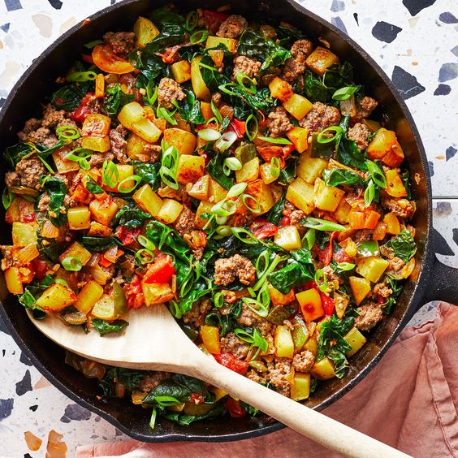
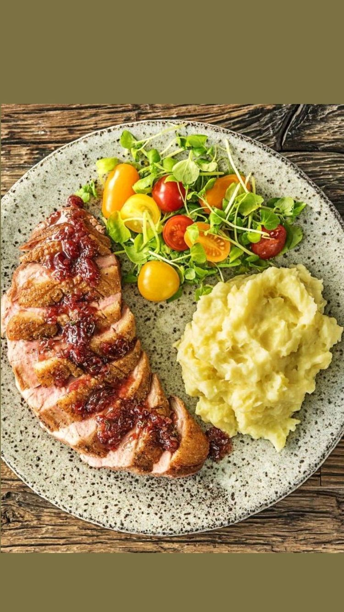

{% extends 'base.html' %} {% block content %}
{% block title %}THE LUNCH BAR{% endblock %}
Garlic And Nduja Rice Stuffed Chicken

- 4 tbsp olive oil
- 1 red onion, finely diced
- 5 garlic cloves, crushed
- 1½ tbsp cumin
- 1 tbsp red pepper flakes
- ½ tbsp smoked paprika
- 30-40g nduja (or 50g chorizo), depending on how hot you like it
- 130g white or wholemeal long-grain rice, rinsed
- 60g unsalted butter
- 1 lemon, zested
- 1 whole chicken (approx 1.5kg)
Method
- Heat half the oil in a large saucepan over medium heat
- Cook the onion for about 10 minutes till soft and turns to brown
- Add the correct amounts of cumin,red pepper flakes,smoked paprika,black pepper and Nduja
- Stir the mixture
- Cook for further five minutes till Nduja releases its oils
- Heat the oven to 200C/180C of a fan/gas
- Mix butter with garlic,lemon zest , cumin and a pinch of salt
- Loosen the skin of the chicken carefully
- Gently push the garlic butter under the skin
- Stuff the cavity with the rice mixture, then tie the legs together to stop it from spilling out
- Rub the skin with the remaining oil and sprinkle with some salt
- Roast the chicken for between 1 hr-1 hr 15 mins until cooked
- Remove from the oven and set aside to rest for 10 mins before carving
- Serve with green vegetables
Easy roast pork shoulder

- 2kg pork shoulder joint
- 1½ tsp fine sea salt
- 1 large onion, sliced
- 2 tbsp chopped fresh rosemary
- 2 garlic cloves
- 2 tbsp of cumin
- 1/4 cup of olive oil
- 1 tbsp of black pepper
- 1 tbsp ground cumin
- 3 scallions, sliced
- 2 tbsp Dijon mustard
- 2 tbsp of Tomato Paste
Method
- Heat the oven to 240C/220C fan/gas
- Remove any packaging from the pork, retaining the string, and pat dry with kitchen paper
- Score deep cuts into the skin in a diamond pattern using a sharp knife
- Rub the oil into the skin, rubbing it well into each cut
- Sprinkle the salt over in an even layer, rubbing this into the cuts
- Scatter the onion slices over the base of a large roasting tin
- Roast for 20-30 mins, until the skin starts to blister and bubble
- Reduce the oven temperature to 180C/160C
- Roast for another 2 hrs 30 mins,until the meat under the skin is very tender when pressed
- Turn the oven back up to 220C and continue to roast the pork for 20-25 mins
- Remove the pork from the oven and rest for 20 mins in the tin, loosely covering with foil
- Carve the meat and serve alongside your favourite side dishes
One-pan lamb with hasselback potatoes

- 1 leg of lamb, about 2kg
- 2 garlic bulbs
- 15 sprigs rosemary
- 15 sprigs thyme
- 1.7kg medium-sized potatoes (Maris Piper work well), unpeeled
- 14 bay leaves
- 4 tbsp olive oil
- 1 lemon, juiced
- 2 garlic cloves
- 2 tbsp of cumin
Method
- Use a small, sharp knife to make at least 30 small, deep, incisions all over the lamb
- Halve the garlic bulbs, so that the top of the cloves fall away and at the bottom, they remain attached
- Peel and slice the tops that have fallen away and keep the other halves for later
- Use your fingers to push the slices into each slit
- Pull off small sprigs of rosemary and thyme, keeping the stalks on
- Poke them into the slits,then cover the lamb and chill
- Remove from the fridge 1 hr before roasting
- Heat oven to 210C/190C fan/gas
- Slice the potatoes
- Tip the potatoes into a large roasting tin with the halved garlic bulb
- Drizzle with half the oil and season,toss to coat and turn the potatoes
- Nestle the lamb in the middle of the tin, pushing the potatoes to the outside
- Rub the lamb with the rest of the oil and the lemon juice and season generously
- Roast for 1 hr 30 mins, basting the potatoes till the lamb is dark brown
- Cook for 10 mins or less
- Remove the lamb from the tin and leave to rest for 15 mins,
Pot-roast beef with French onion gravy

- 1kg silverside or topside of beef with no added fat
- 2 tbsp olive oil
- 8 young carrots, tops trimmed (but leave a little, if you like)
- 1 celery stick, finely chopped
- 200ml white wine
- 600ml rich beef stock
- 2 bay leaves
- 500g onion
- a few thyme sprigs
- 1 tsp butter
- 1 tsp light brown or light muscovado sugar
- 2 tsp plain flour
Method
- Heat oven to 160C/140C fan/gas
- Rub the meat with 1 tbsp of the oil and plenty of seasoning
- Heat a large flameproof casserole dish and brown the meat all over for about 10 mins
- Add 2 tbsp oil to a frying pan
- Fry the carrots and celery for 10 mins until it turns to golden
- Lift the beef onto a plate, splash,wine into the hot casserole and boil for 2 mins
- Pour in the stock and return the beef
- Then tuck in the carrots, celery and bay leaves
- Cover and cook in the oven for 2 hrs,while slicing onions thinly
- Heat 1 tbsp oil in a pan and stir in the onions, thyme and some seasoning
- Cover and cook gently for 20 mins until the onions are softened but not coloured
- Remove the lid, turn up the heat, add the butter and sugar
- Let the onions caramelise to a dark golden brown, stirring often
- Remove the thyme sprigs, then set aside
- Remove the beef from the casserole and snip off the strings
- Reheat the onion pan, stir in the flour and cook for 1 min
- Whisk the floury onions into the beefy juices in the casserole, to make a thick onion gravy
- Add the beef and carrots back to the casserole
- Slice the beef and bring to the table on a platter,with the carrots to the side
- Spoon the gravy over
{% endblock %}